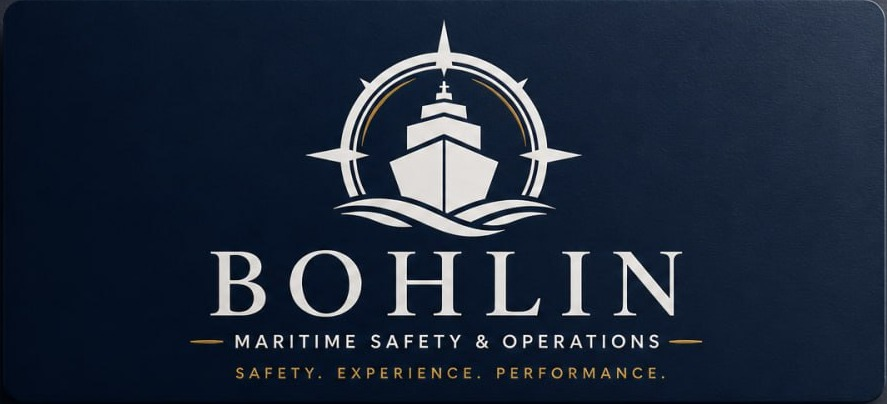

01 / RELIABILITY
Tanker Reliability Diagnostic
En fokuserad bild av om PMS-data, defekter och kritiska reservdelar ger operativ kontroll — med evidensregister, snabbvinster och implementeringsplan.
Diskutera ett pilotuppläggNär PMS-data, kritiska reservdelar och verkligt arbete ombord måste stämma överens.
Bohlin Maritime Safety & Operations hjälper tankeroperatörer att få underhållsdata, reservdelar, operativa rutiner och vardagen ombord att tala samma språk.
Avgränsade uppdrag med ett konkret resultat — utformade för att minska köprisken och skapa en tydlig nästa fas.
En fokuserad bild av om PMS-data, defekter och kritiska reservdelar ger operativ kontroll — med evidensregister, snabbvinster och implementeringsplan.
Diskutera ett pilotuppläggTrovärdiga bevis på att prioriterade system och arbetssätt är redo. Gap, åtgärder och ansvar samlas i ett användbart readiness register.
Diskutera ert behovFör rederier som vill skapa konsekventa arbetsflöden och bättre systemanvändning över flera fartyg — från pilot till playbook och flottutrullning.
Planera nästa stegVarje uppdrag har tydlig avgränsning, en bevislogg och prioriterade rekommendationer som går att omsätta i verklig förbättring.
Mål, urval, ansvar och förutsättningar fastställs skriftligt.
Relevant data, historik, procedurer och register analyseras.
System jämförs mot användare, utrustning, lager och arbete.
Konsekvenser för säkerhet, drift och användbarhet värderas.
Strukturer, checklistor och arbetssätt utvecklas enligt scope.
Ägarskap, status och beslutade åtgärder gårs igenom.

Pontus Bohlin är svensk nautiker och verksam Chief Officer inom olje- och kemikalietankerfart. Arbetet utgår från lastoperationer, stabilitet, navigation, däck- och lastutrustning, arbetsplanering och operativ efterlevnad.
Bohlin Maritime förenar fartygets vardag med landorganisationens system, beslut och riskkontroll — med respekt för besättningen och tydliga ansvarsgränser.
Ett första samtal kan hjälpa er att ringa in rätt fartyg, frågeställning och ett avgränsat nästa steg.